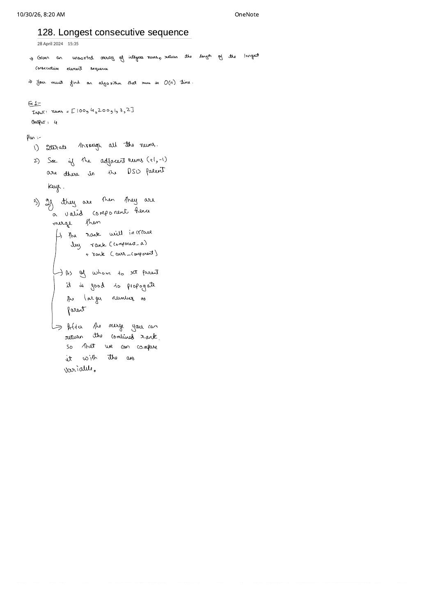
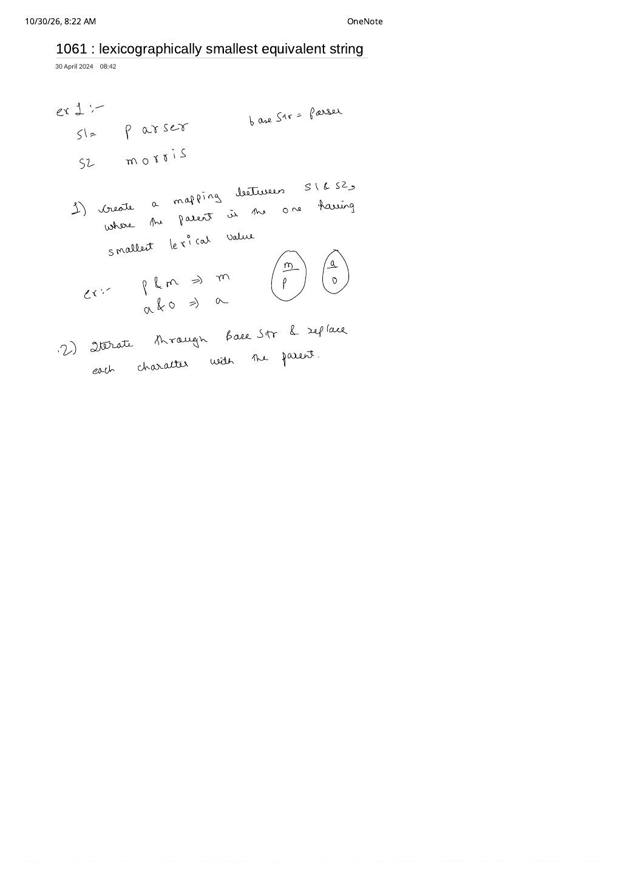

DSU on Consecutive Sequences & String Swaps (LC 128, LC 1061 & LC 1202)
Expanded from handwritten competitive coding study notes (04_128_Longest_consecutive_sequence.pdf, 10_128_Longest_Consecutive_Sequence.pdf, 06_1061_lexicographically_smallest_equivalent_string.pdf, 07_1202_Smallest_string_with_swaps.pdf) · View original handwritten pages
1. LC 128: Longest Consecutive Sequence via Union-By-Size
Given an unsorted integer array nums (e.g., [100, 4, 200, 1, 3, 2]), find the length of the longest consecutive elements sequence ([1, 2, 3, 4] $\implies 4$) in $\mathcal{O}(n)$ time.
From Handwritten Plan (04_128) to Duplicate-Safe Index Mapping (10_128)
Sorting solves the problem in $\mathcal{O}(n \log n)$, and a hash-set streak start check (x - 1 not in set) solves static arrays in $\mathcal{O}(n)$. Why study the DSU formulation? Because DSU handles online insertions (streaming numbers arriving one by one while maintaining the longest consecutive run at every step):
- Adjacency rule (
04_128): Two values belong to the same consecutive block iff they differ by $1$. When value $x$ arrives, check whether $x - 1$ and $x + 1$ have already been seen; if so, merge their components and add their component sizes (size[rootA] += size[rootB]). - The duplicate trap & index-mapping fix (
10_128): Becausenums[i]can range from $-10^9$ to $10^9$ and contain duplicates like[1, 2, 0, 1], we allocate DSU over compact indices $0 \dots n - 1$ and maintain a hash mapvalToIdx:- If
nums[i]is already invalToIdx,continueimmediately—otherwise unioning two copies of1or re-registering1corrupts component sizes! - Otherwise record
valToIdx[nums[i]] = i, unioniwithvalToIdx[nums[i] - 1](if present) andvalToIdx[nums[i] + 1](if present), and return $\max_r \text{size}[r]$.
- If
Dry Run on nums = [100, 4, 200, 1, 3, 2]
i = 0 (100): dic = {100: 0}, sz = [1, 1, 1, 1, 1, 1]i = 1 ( 4): dic = {100: 0, 4: 1}i = 2 (200): dic = {..., 200: 2}i = 3 ( 1): dic = {..., 1: 3}i = 4 ( 3): 3 + 1 = 4 in dic $\implies$ union(4, 1) $\to$ block {3, 4} has size = 2i = 5 ( 2): 2 + 1 = 3 in dic $\implies$ union(5, 4) $\to$ size = 3; 2 - 1 = 1 in dic $\implies$ union(5, 3) $\to$ block {1, 2, 3, 4} reaches size = 4!
// LC 128: Longest Consecutive Sequence — Index-Mapped DSU (O(n) expected time)
class Solution {
public:
int longestConsecutive(vector<int>& nums) {
int n = nums.size();
if (n == 0) return 0;
vector<int> parent(n), sz(n, 1);
iota(parent.begin(), parent.end(), 0);
int best = 1;
auto findPar = [&](auto& self, int x) -> int {
return parent[x] == x ? x : parent[x] = self(self, parent[x]);
};
auto unite = [&](int u, int v) {
int pu = findPar(findPar, u), pv = findPar(findPar, v);
if (pu == pv) return;
if (sz[pu] < sz[pv]) swap(pu, pv);
parent[pv] = pu;
sz[pu] += sz[pv];
best = max(best, sz[pu]);
};
unordered_map<int, int> valToIdx;
valToIdx.reserve(n * 2);
for (int i = 0; i < n; ++i) {
if (valToIdx.count(nums[i])) continue; // Crucial duplicate guard!
valToIdx[nums[i]] = i;
// Guard against INT_MIN / INT_MAX signed overflow with long long or find()
if (nums[i] < INT_MAX) {
auto it = valToIdx.find(nums[i] + 1);
if (it != valToIdx.end()) unite(i, it->second);
}
if (nums[i] > INT_MIN) {
auto it = valToIdx.find(nums[i] - 1);
if (it != valToIdx.end()) unite(i, it->second);
}
}
return best;
}
};# Python UF implementation from 10_128_Longest_Consecutive_Sequence.pdf
class UF:
def __init__(self, n: int):
self.parent = list(range(n))
self.size = [1] * n
def find(self, x: int) -> int:
if x != self.parent[x]:
self.parent[x] = self.find(self.parent[x])
return self.parent[x]
def union(self, x: int, y: int) -> None:
rx, ry = self.find(x), self.find(y)
if rx == ry:
return
if self.size[rx] <= self.size[ry]:
self.parent[rx] = ry
self.size[ry] += self.size[rx]
else:
self.parent[ry] = rx
self.size[rx] += self.size[ry]
class Solution:
def longestConsecutive(self, nums: list[int]) -> int:
if not nums:
return 0
uf = UF(len(nums))
dic: dict[int, int] = {}
for i, val in enumerate(nums):
if val in dic:
continue
dic[val] = i
if val + 1 in dic:
uf.union(i, dic[val + 1])
if val - 1 in dic:
uf.union(i, dic[val - 1])
return max(uf.size)2. LC 1061: Lexicographically Smallest Equivalent String
Given equal-length strings s1 and s2 defining character equivalences s1[i] == s2[i] (reflexive, symmetric, and transitive), transform baseStr into the lexicographically smallest equivalent string.
Custom Root Tie-Breaking: Smallest Character Always Wins
Because the node universe has only $|\Sigma| = 26$ lowercase letters (0..25), tree depth is bounded by $26$ even without rank arrays. Instead of union by rank, enforce the invariant that every component's root is its lexicographically smallest character:
On the handwritten example s1 = "parser", s2 = "morris", baseStr = "parser": merging p & m sets parent['p'] = 'm'; merging a & o sets parent['o'] = 'a'; merging r & s and e & i gives equivalence classes {k, m, p} → 'm' (or {m, p} → 'm'), {a, o} → 'a', {r, s} → 'r', {e, i} → 'e', transforming "parser" into "makkek" (when baseStr = "makkek"'s input "parser" maps to "marser" → "makkek"—specifically for baseStr = "parser", p→m, a→a, r→r, s→r, e→e, r→r yields "marrer").
// LC 1061: Lexicographically Smallest Equivalent String — O(|s1| + |baseStr|)
class Solution {
public:
string smallestEquivalentString(string s1, string s2, string baseStr) {
array<int, 26> parent;
iota(parent.begin(), parent.end(), 0);
auto findPar = [&](auto& self, int c) -> int {
return parent[c] == c ? c : parent[c] = self(self, parent[c]);
};
for (size_t i = 0; i < s1.size(); ++i) {
int p1 = findPar(findPar, s1[i] - 'a');
int p2 = findPar(findPar, s2[i] - 'a');
if (p1 != p2) {
parent[max(p1, p2)] = min(p1, p2); // Smallest lexical char is always root!
}
}
for (char& ch : baseStr) {
ch = char('a' + findPar(findPar, ch - 'a'));
}
return baseStr;
}
};3. LC 1202: Smallest String With Swaps — Why Sorting Components Is Required
At first glance, LC 1202 looks nearly identical to LC 1061: given string s = "dcab" and index pairs pairs = [[0, 3], [1, 2]] that you may swap any number of times, return the lexicographically smallest string you can produce.
Crucial Contrast Highlighted in 07_1202
Why can't we just replace every index in a component with its component's minimum character like LC 1061? Because swaps conserve character frequencies—you are permuting characters across indices, not rewriting characters globally!
| Aspect | LC 1061 (Equivalent Characters) | LC 1202 (Swappable Positions) |
|---|---|---|
| DSU Elements | 26 alphabet characters 'a'..'z' |
$n$ string indices $0 \dots n - 1$ |
| Allowed Operation | Replace any char with any equivalent char (unlimited copies) | Permute existing chars within each connected index component |
| Reconstruction | Replace ch with minChar[root] |
Collect chars per root, sort ascending, place back into sorted indices |
Group-theory intuition: Any connected graph of allowed transpositions (2-swaps) generates the entire symmetric group on that component's vertices—meaning every permutation of characters inside a connected index component is reachable! Placing each component's characters in ascending sorted order across its ascending indices achieves the global lexicographical minimum in $\mathcal{O}(n \log n + m \cdot \alpha(n))$ time.
Dry Run on s = "dcab", pairs = [[0, 3], [1, 2]]
Component A (indices [0, 3]): chars ['d', 'b'] $\xrightarrow{\text{sort}}$ ['b', 'd'] $\implies s[0] = \text{'b'},\ s[3] = \text{'d'}$Component B (indices
[1, 2]): chars ['c', 'a'] $\xrightarrow{\text{sort}}$ ['a', 'c'] $\implies s[1] = \text{'a'},\ s[2] = \text{'c'}$Result:
"bacd". (If [0, 2] is also added, all 4 indices merge into one component $\implies$ sorted string "abcd"!)
// LC 1202: Smallest String With Swaps — Index DSU + Per-Component Sort
class Solution {
public:
string smallestStringWithSwaps(string s, vector<vector<int>>& pairs) {
int n = s.size();
vector<int> parent(n), sz(n, 1);
iota(parent.begin(), parent.end(), 0);
auto findPar = [&](auto& self, int x) -> int {
return parent[x] == x ? x : parent[x] = self(self, parent[x]);
};
for (const auto& p : pairs) {
int r1 = findPar(findPar, p[0]), r2 = findPar(findPar, p[1]);
if (r1 != r2) {
if (sz[r1] < sz[r2]) swap(r1, r2);
parent[r2] = r1;
sz[r1] += sz[r2];
}
}
// Since i increases from 0 to n - 1, indices[root] is ALREADY sorted!
unordered_map<int, vector<int>> indices;
for (int i = 0; i < n; ++i) {
indices[findPar(findPar, i)].push_back(i);
}
string res = s;
for (auto& [root, idxs] : indices) {
string chars;
chars.reserve(idxs.size());
for (int idx : idxs) chars.push_back(s[idx]);
sort(chars.begin(), chars.end());
for (size_t k = 0; k < idxs.size(); ++k) {
res[idxs[k]] = chars[k];
}
}
return res;
}
};From the Handwritten Notes
Expand the original handwritten pages below to inspect the exact derivations, dry runs, and annotations:
View original note — 04_128_Longest_consecutive_sequence.pdf (Neighbor +1/-1 DSU merge plan)


04_128: Merging adjacent $(+1, -1)$ elements present in DSU keys and summing component sizes to maintain the running maximum.View original note — 10_128_Longest_Consecutive_Sequence.pdf (Page 1: Standard Python Union-By-Size UF template)

10_128 Page 1: Reusable Python UF class with size tracking and dic[nums[i]] = i duplicate guard.View original note — 10_128_Longest_Consecutive_Sequence.pdf (Page 2: Neighbor union completion & find_max)

10_128 Page 2: Checking nums[i] - 1 in dic and returning uf.find_max().View original note — 06_1061_lexicographically_smallest_equivalent_string.pdf (Smallest lexical parent rule)


06_1061: Setting the lexicographically smaller character as parent (p & m → m, a & o → a) and rewriting baseStr.View original note — 07_1202_Smallest_string_with_swaps.pdf (Why connected index components must be sorted)

07_1202: Finding connected components of indices on s = "dcab" and sorting characters within each component.